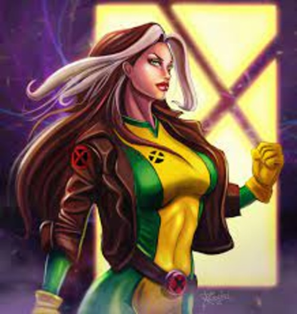

Rogue's Story
Rogue is a superhero who belongs to the Marvel universe. She's one of Professor Xaviers (Prof X) students, and a member of the XMen. She has the ability to absorb other mutants powers, to the deteriment of the mutant. So, she can't have physical contact with anyone; as, if she touches a mutant for too long she can send them into a coma. In one epic confrontation she took on another mutant with super strength and flying capabilities, absorbing these powers permanently. Unfortunately, Rogue placed the mutant into a coma. She's conflicted and battles this inner turmoil, often resolving her dark leanings towards a higher understanding of humanity and human fragility.
Members of the X Men
- Professor X
- Beast
- Jean Grey-Summers/Phoenix
- Cyclops/Scot Summers
- Storm
- Wolverine
- Gambit
- Jubilee
- Bishop
Rogue's Mutant Abilities
- Capacity to absorb mutant powers
- Able to absorb memories
- Permanently aquired, through physical absorbtion: Invulnerability, Superhuman Strength, Speed, Stamina, Agility, Reflexes, Flight